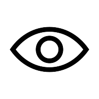
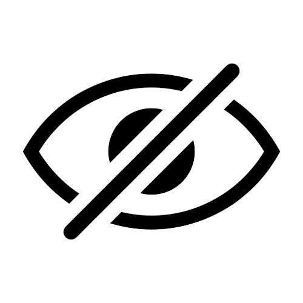

<ion-header [translucent]="true">
  <ion-toolbar class="toolbar">
    <ion-title>Uloguj se</ion-title>
  </ion-toolbar>
</ion-header>

<ion-content [fullscreen]="true">
  <div class="sadrzaj">
    <div class="divKontaktSlika">
      
    </div>
    <div class="divNaslov">
      <h1 class="naslov">
        ULOGUJ SE
      </h1>
    </div>
    <div class="unosPodataka">
      <div class="unosEmail">
        <label class = "item-item-input">
          <input type = "text" placeholder = "Email" class="prostorZaEmail" [(ngModel)]="email"/>
       </label>
      </div>

      <div *ngIf="!showPassword" class="unosSifra">
        <label class = "item-item-input">
          <input type = "password" placeholder = "Sifra" class="prostorZaSifra" [(ngModel)]="password"/>
       </label>
       
      </div>

      <div *ngIf="showPassword" class="unosSifra">
        <label class = "item-item-input">
          <input type = "text" placeholder = "Sifra" class="prostorZaSifra" [(ngModel)]="password"/>
       </label>
       
      </div>

      <div class="ispodUnosa">
        <label for="linkKaSignup" class="linkKaSignup">
          Nemate nalog? <a href="/signup" style="color:black;">Napravi jedan</a>
        </label>
        <ion-buttons slot="end" class="proceedButton">
          
        </ion-buttons>
      </div>
    </div>
  </div>
</ion-content>
